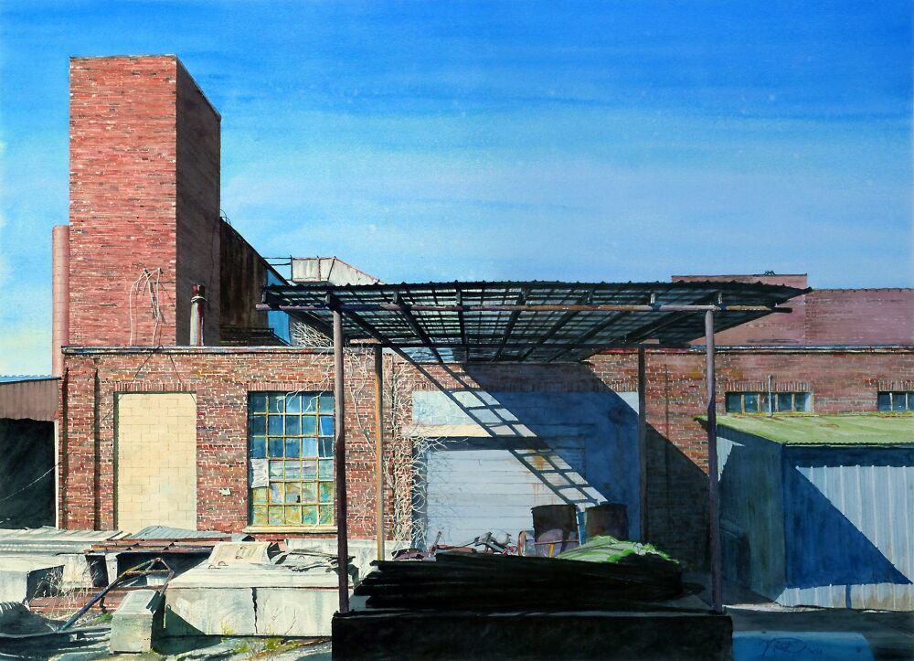

Now On ViewSpecial Exhibition · 21st-Century Art Gallery
47th Annual Exhibition of the Virginia Watercolor Society
September 5, 2026 – November 1, 2026
More than 100 watercolors by artists from across Virginia.
✦ Free with General Admission